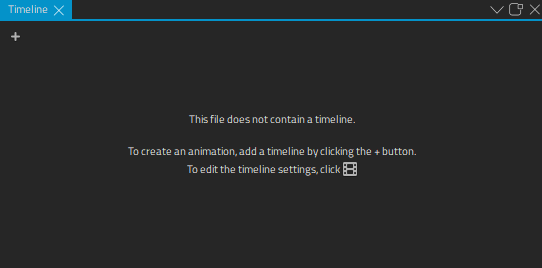
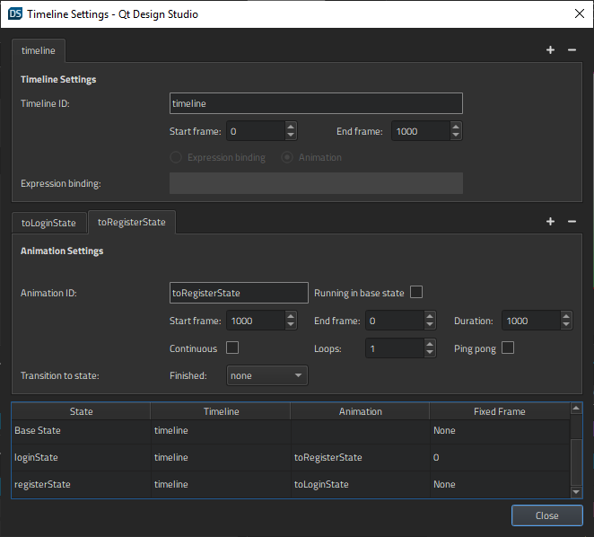
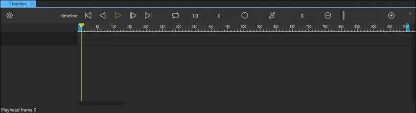
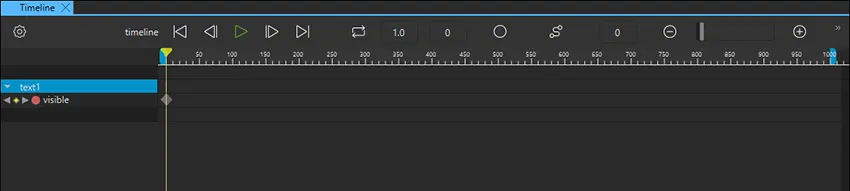
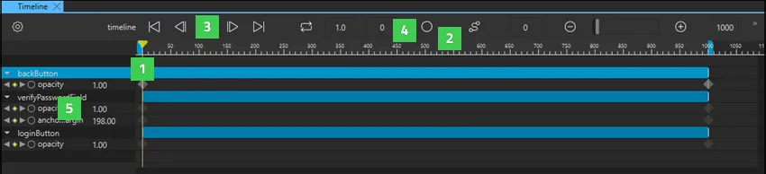
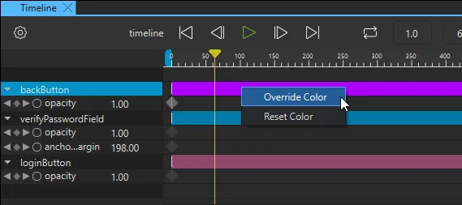

Timeline
You can use the timeline and keyframe based editor in the Timeline view to animate the properties of components. The view is empty until you create a timeline.

Select the  (Add Timeline) button to create a timeline and specify settings for it in the Timeline Settings dialog.
(Add Timeline) button to create a timeline and specify settings for it in the Timeline Settings dialog.

When you select Close, the Timeline view appears. It now displays a toolbar and a ruler but no keyframe tracks.

To animate component properties in the Timeline view, you must insert keyframes for them. In the Properties view, select  (Actions) > Insert Keyframe for a property that you want to animate. A keyframe track is generated for each component that you insert keyframes for.
(Actions) > Insert Keyframe for a property that you want to animate. A keyframe track is generated for each component that you insert keyframes for.

You can now select to record changes in component properties while you navigate the timeline.
The following video shows how to insert keyframes for component properties and to animate them in Timeline:
To try it yourself, follow the Log In UI - Timeline tutorial.
For more information about creating timeline animations, see Creating Timeline Animations.
Navigating in Timeline

You can navigate the timeline in the following ways:
- Drag the playhead (1) to a frame.
- Click on the ruler (2) to move to a frame.
- Select the To Start (Home), Previous (,), Next (.), or To End (End) buttons (3), or use the keyboard shortcuts to move to the first, previous, next, or last frame on the timeline.
- Enter the number of a frame in the current keyframe field (4) to move to that frame.
- Select the Previous and Next buttons next to a property name on the timeline (5) to move to the previous or next keyframe for that property.
Zooming in Timeline
Use the slider on the toolbar to set the zooming level in the Timeline view. Select the and buttons to zoom out of or into the view.
Setting Keyframe Track Color
To change the color of a keyframe track, select Override Color in the context menu, and then select a color in the color picker. To reset the color, select Reset Color.

Timeline Toolbar
The Timeline toolbar contains the following buttons and fields.
| Button/Field | Action | Read More |
|---|---|---|
 | Opens the Timeline Settings dialog for editing timeline settings. | Creating a Timeline |
| Timeline ID | Displays the ID of the current timeline. | Creating a Timeline |
| To Start (Home) moves to the first frame on the timeline. | Navigating in Timeline | |
| Previous (,) moves to the previous frame on the timeline. | Navigating in Timeline | |
| Play (Space) previews the animation. | Viewing the Animation | |
| Next (.) moves to the next frame on the timeline. | Navigating in Timeline | |
| To End (End) moves to the last frame on the timeline. | Navigating in Timeline | |
| Current Keyframe | Displays the frame that the playhead is currently on. Enter a number in the field to move the playhead to the respective frame. | Navigating in Timeline |
| Records changes in keyframe values. | Setting Keyframe Values | |
| Opens Easing Curve Editor for attaching an easing curve to the selected transition. | Editing Easing Curves | |
| Start Frame | Specifies the first frame of the timeline. Negative values are allowed. The difference between the start frame and the end frame determines the duration of the animation. | Creating a Timeline |
| Zoom Out (Ctrl+-) zooms out of the view. | Zooming in Timeline | |
| Slider | Sets the zooming level. | Zooming in Timeline |
 | Zoom In (Ctrl++) zooms into the view. | Zooming in Timeline |
| End Frame | Specifies the last frame of the timeline. The difference between the start frame and the end frame determines the duration of the animation, so if the start frame is 0, the end frame equals the duration. | Creating a Timeline |
| State Name | Displays the name of the current state. | Binding Animations to States |
Keyframe Track Icons
Each keyframe track can contain the following buttons and markers.
| Button/Icon | Action | Read More |
|---|---|---|
| Jumps to the previous frame on the timeline. | Setting Keyframe Values | |
| Jumps to the next frame on the timeline. | Setting Keyframe Values | |
| Records changes in keyframe values for a particular property. | Setting Keyframe Values | |
Indicates the type of easing curve attached to the keyframe. When a keyframe track is selected, the keyframe markers on it turn gray, and when a keyframe itself is selected, its marker turns brown:
| Editing Easing Curves |
Timeline Context Menu
The following table summarizes the context menu items available for each keyframe track for a component, property, or keyframe marker and provides links to more information about them.
| To Learn About | Go To |
|---|---|
| Delete All Keyframes | Deleting Keyframes |
| Add Keyframes at Current Frame | Setting Keyframe Values |
| Copy All Keyframes | Copying Keyframes |
| Paste Keyframes | Copying Keyframes |
| Remove Property | Setting Keyframe Values |
| Delete Keyframe | Deleting Keyframes |
| Edit Easing Curve | Editing Easing Curves |
| Edit Keyframe | Editing Keyframe Values |
| Override Color | Setting Keyframe Track Color |
| Reset Color | Setting Keyframe Track Color |